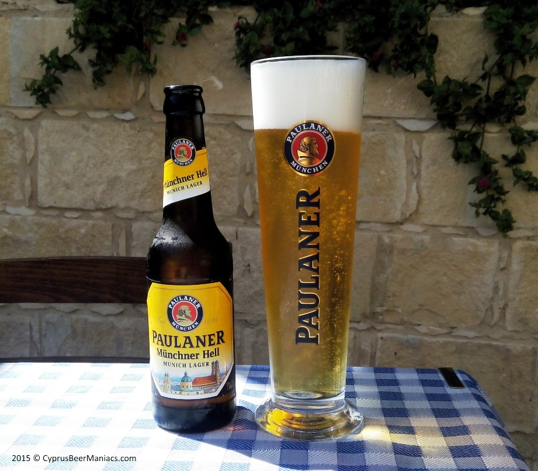
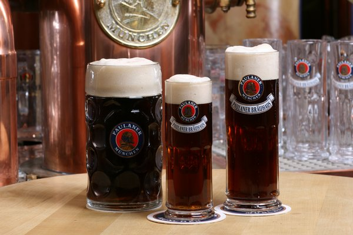
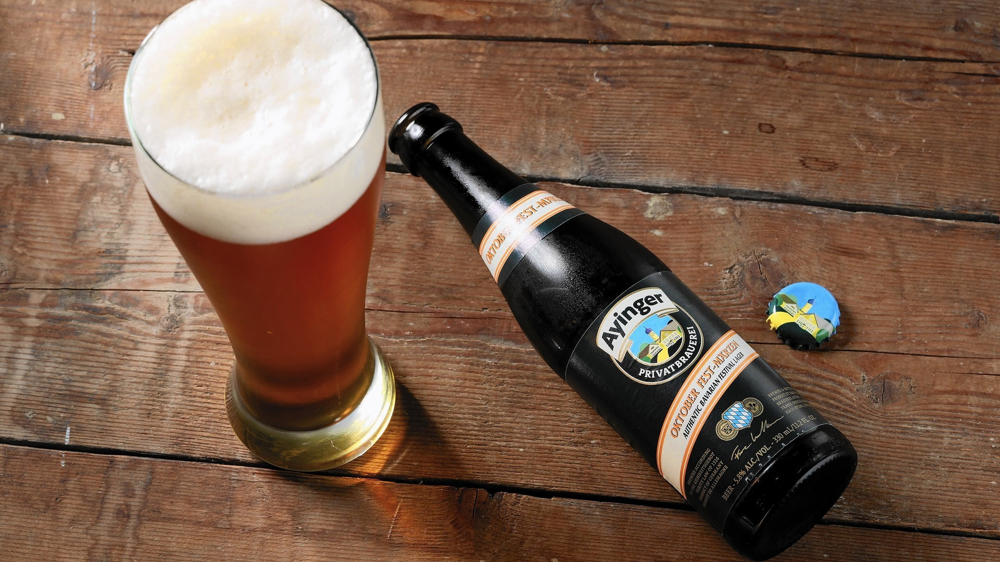
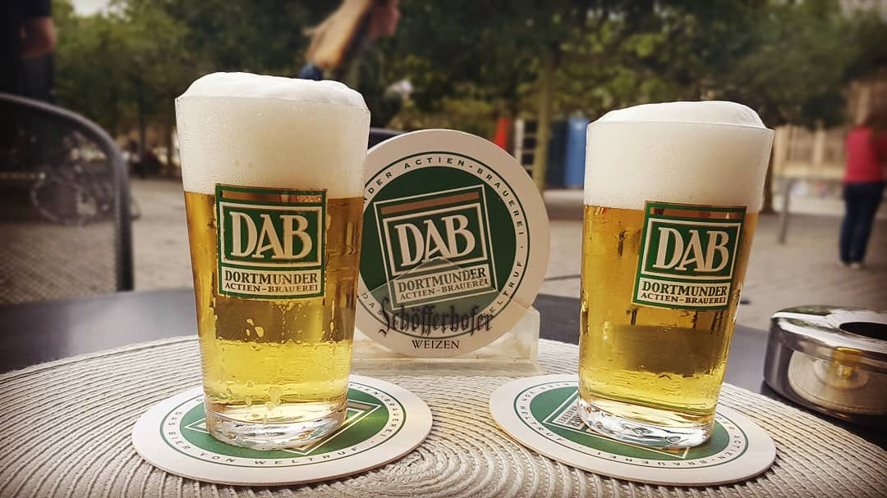
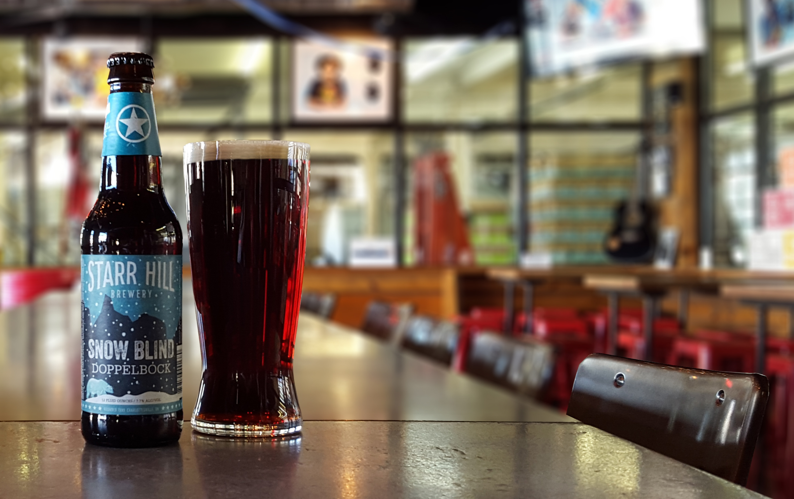

FAMILIA DE LAS LAGER
PILSEN

Es el estilo más utilizado para fabricar cerveza en todo el mundo. A veces se conocen como pilsener o pils y el nombre viene de la ciudad de Plzen, en Bohemia, hoy en la República Checa, pero que se llamaba Pilsen cuando formaba parte de la zona germano hablante del Imperio Austrohúngaro en 1842. En esta ciudad se elaboró por primera vez un tipo de cerveza dorada y transparente, utilizando el método de fermentación baja, en contraste con las cervezas oscuras o turbias conocidas hasta esa fecha.
La fábrica originaria de éste tipo de cerveza todavía funciona en lo que hoy es la República Checa y según las normas del país, el término pilsen se ha convertido en una denominación de origen por lo que sólo las cervezas elaboradas en esa ciudad pueden llamarse así; el resto de las cervezas checas, aunque sean del mismo estilo, no pueden utilizar el nombre y se les suele denominar simplemente lager.
Las auténticas pilsen son de color pálido, con un contenido alcohólico moderado, entre 4.5 y 5.5%, son secas, con un buen carácter de malta y un aroma de lúpulo muy característicos. Las clásicas pilsen están hechas sólo de cebada malteada, lúpulo, levadura y agua, según la Ley de Pureza Alemana de 1516, o Reinheisgebot y tienen un periodo de maduración mínimo de uno o dos meses. Es el estilo de cerveza más imitado en el mundo, hasta el punto de que muchas veces se denomina pilsen a cualquier cerveza dorada y transparente, aunque no reuna las características de las auténticas pilsen.
MÜNCHNER HELL - LAGER PÁLIDAS DE BAVIERA

{kind=link}
Cervezas pálidas, parecidas a las pilsen pero un poco menos secas, con más cuerpo y menos lupulizadas. Aunque son ligeramente más oscuras, tienen el mismo contenido alcohólico, de 4.5 a 5%. Son la versión pálida (helles) de las de estilo oscuro (dunkel), conocido como estilo Munich. Se empezaron a elaborar a principios del siglo XX como reacción de los bávaros a las cervezas pálidas del resto de Alemania y Europa que empezaban a popularizarse. Es un estilo muy común en Munich y sur de Alemania y se sirve en las cervecerías cuando se pide simplemente una cerveza. En Munich y sur de Baviera se conocen con el nombre de helles o münchner hell, que significa pálida y en Franconia, parte norte del estado de Baviera, como vollbier.
MÜNCHNER DUNKEL - LAGER OSCURAS - ESTILO MUNICH

{kind=link}
En alemán se les conoce como dunkel o dunkles que significa oscura. Es una especialidad tradicional de Munich y de algunas partes de Franconia por lo que a veces se les conoce como estilo Munich (Münchner). Suelen tener más carácter de malta que las pálidas y existían antes que éstas. Hasta la Segunda Guerra Mundial eran las cervezas ordinarias de cada día. Su color varía entre el rojo amarronado y el negro carbón y suelen tener un poco más de alcohol que las pálidas, de 5 a 5.5%. En el resto del mundo, es el estilo que normalmente se sirve cuando se quiere una lager oscura.
MÄRZEN/OKTOBERFEST - ESTILO VIENNA

{kind=link}
Este estilo fue elaborado por primera vez en la ciudad de Viena por Anton Dreher en 1841, cuando introdujo el método de fermentación baja en su fábrica de cerveza, aunque posteriormente se desarrollaría en Munich. Hoy en día ya no se produce en Viena y sí en Munich donde viene elaborándose tradicionalmente desde finales del siglo pasado para celebrar la Fiesta de la Cerveza de Octubre.
La relación entre los términos Märzen-Oktoberfest-Viena que suele aparecer en las etiquetas puede explicarse de la siguiente forma. Antiguamente, la cerveza que se servía en la Fiesta de la Cerveza de Munich (institucionalizada en 1810) se elaboraba en el mes de Marzo. Esta era la última remesa de cerveza antes del verano, ya que por el calor y al no existir refrigeración artificial, no se podía hacer durante los siguientes meses. Era una cerveza un poco más fuerte de lo normal para que el contenido alcohólico la conservara cuando hacía calor. Al final del verano, la cerveza de marzo que quedaba se consumía en los distintos festivales que existían para dar paso a las nuevas cervezas elaboradas a partir de Septiembre. Esta cerveza, que había sido elaborada por el método de fermentación alta, se guardaba en cuevas heladas de los Alpes y al final del verano estaba muy bien fermentada, era fuerte y con buena maduración. Cuando a mediados del siglo pasado se desarrolló el método lager de hacer cerveza por fermentación baja, el estilo que se utilizó para inspirar la creación de una nueva cerveza que sería servida durante el Oktoberfest de Munich fue el estilo Viena que Anton Dreher había introducido años antes. Esta cerveza se elaboraba en Marzo y se dejaba madurar hasta finales de Septiembre/Octubre para ser consumida. Hoy en día, con los métodos de refrigeración artificial esto ya no es necesario y las cervezas suelen tener unos tres meses de maduración. Por lo tanto, las cervezas que se etiquetan como Märzen/Oktoberfest, están hechas en el estilo Viena. El término Márzen-Oktoberfest suele utilizarse sólo en Alemania. En otros países, se conocen como cervezas estilo Viena o simplemente amber (por su color).
Son cervezas lager de color bronce o cobrizo, con mucho cuerpo y más alcohol que las lager doradas, pero menos que las bock , tienen entre un 5 y un 6% de alcohol.
DORTMUNDER EXPORT

{kind=link}
Fue uno de los cuatro grandes estilos de hacer cerveza que se desarrollaron en el siglo XIX y que tomaron el nombre de su ciudad de origen, Dortmund, Pilsen, Munich y Viena . El dortmunder viene de la ciudad de Dortmund, en el noroeste de Alemania y debido a su gran aceptación pronto empezó a venderse fuera de su lugar de origen, por lo que se le subtituló export. En Alemania es una denominación de origen: sólo las elaboradas en esa ciudad puden utilizar el nombre dortmunder . Hoy se elaboran cervezas con características similares en muchas otras ciudades de Alemania y se les denomina simplemente export. Sin embargo es un término un poco confuso ya que los productores de cerveza en la ciudad de Dortmund elaboran cervezas no sólo de este estilo, sino también de otros y utilizan el nombre de Dortmund en toda la gama.
Las cervezas de este estilo son de color dorado pálido, semisecas, con más cuerpo que las pilsen, pero un poco menos amargas.
BOCK, DOPPELBOCK, WEIZENBOCK, MAIBOCK, EISBOCK

{kind=link}
El nombre de estas cervezas fuertes puede sugerir la fuerza de un macho cabrío, que es el significado de la palabra alemana bock, aunque es más probable que el nombre derive de la ciudad de Einbeck en el norte de Alemania, de donde es originaria esta cerveza. Se cree que ya se elaboraba en los siglos XIV ó XV. Hoy en día este estilo también está asociado a la ciudad de Munich, donde se producen muy buenas cervezas en este estilo
La bock es una clásica cerveza lager fuerte hecha por fermentación baja, según la tradición alemana. Puede ser oscura o clara, pero siempre tiene mucho cuerpo y alta graduación alcohólica, entre 4.5 y 6.5%. Aunque la mayoría de las bock están hechas de cebada no son raras las bock que también utilizan una parte de trigo; en este caso se les conoce como weizenbock o bock de trigo.
Otra especialidad dentro de esta categoría la forman las maibock, que suelen tener un color dorado, son fuertes y con mucho cuerpo. En algunas partes de Alemania este estilo se sirve en Mayo para celebrar la entrada de la primavera. Es una cerveza lo suficientemete fuerte para ayudar a soportar el frío de los últimos días de invierno, pero lo suficientemente afrutada como para anticipar el verano. En otras zonas de Alemania se elaboran otras bock, donde lo tradicional es tomarlas en pleno invierno, sobre todo en Navidad. En Holanda también se elabora una cerveza similar y es un estilo tradicional que suele salir al mercado a primeros de Octubre. En este país se les llama bok (sin la c), existiendo una variante de trigo llamada tarwebok (tarwe=trigo).
Otra estilo tradicional, dentro de la categoría, lo constituyen las doppelbock, que son cervezas todavía más fuertes que las bock, con más de 6.5% de alcohol. Normalmente son las más fuertes que cada productor elabora y suelen llamarse con un nombre que termina con el sufijo “ator”, siguiendo a la primera que se hizo en este estilo, la Salvator. Originariamente, fue una receta de un monasterio de monjes en Munich que la empezó a elaborar para “alimentar” a sus monjes durante la cuaresma, ya que sólo podían ingerir bebidas y no alimentos. Actualmente se sirven como bebidas reconfortantes cuando se acaba el invierno y empieza la primavera. La salida al mercado de las primeras cervezas doppelbock del año suele celebrarse con un festival tres o cuatro semanas antes de Semana Santa, que es la época de las “starkbier” o cervezas fuertes en alemán.
Otra variante de bock es la llamada eisbock (eis=hielo). Son doppelbocks muy fuertes que se elaboran congelando la cerveza y quitando parte del hielo que se forma, ya que el agua que hay en la cerveza se congela antes que el alcohol. El resultado es una concentración de la cerveza, que la hace mucho más fuerte y adulzada, pudiendo tener más de un 10% de alcohol.